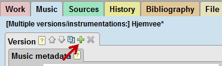
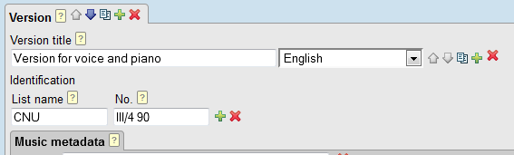
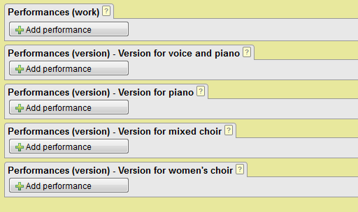
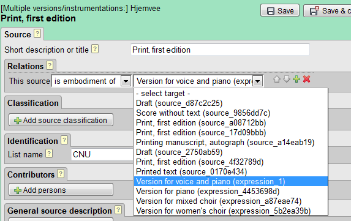

Works having multiple versions
Some works may exist in several versions – for instance, an early and a revised version, or different instrumentations of the same work. MerMEId allows you to define such versions, each with their own list of sources and performances.
- At the Music
tab, click the version
 add button to add a second version to an existing one:
add button to add a second version to an existing one:
 - Notice that you can now add a version title to distinguish
between versions. You can also add version-specific identifiers.
 - Each version area has its own set of metadata such as key, incipits, persons associated with it (e.g. an arranger), instrumentation, and components (movements). Add the relevant information to your versions and click the save icon to save your work.
- At the History
tab, you may now enter version-specific performance data. For each
version there is a separate list of performances. You may, however,
also list performances in the general "work" level list of performances
(the uppermost of the lists), if you prefer a single list or if you do
not know which version was performed.
 - Like performances, also sources may refer to either the
work in general or to a specific version:
 - Check the HTML preview to see how performances and sources are being listed with their respective versions!